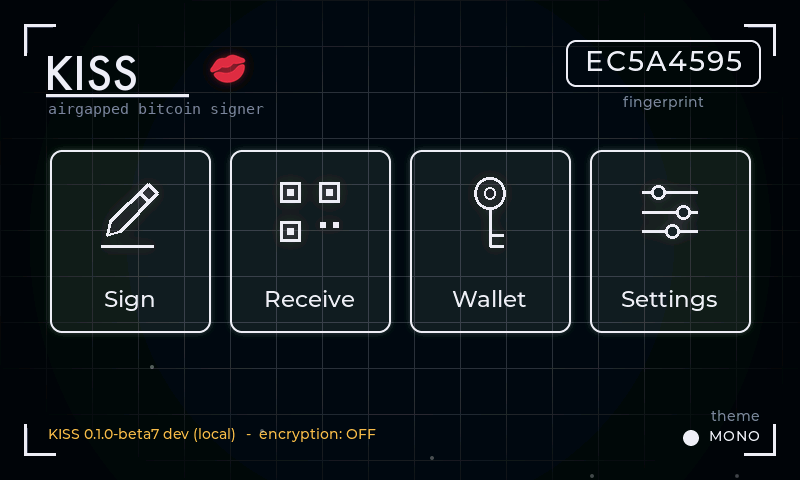

KISS Signer Documentation
Docs
Everything the README summarizes, in full: verifying releases, flashing, building from source, the flash-encryption build, and first boot.
01 / trust, then flash
Check the download before you trust it
For the beta, release artifacts live on the GitHub Releases tab: the
merged firmware image
kiss-signer-<version>.bin (flashed at offset 0),
SHA256SUMS plus its detached GPG signature
SHA256SUMS.asc, the release public key
kiss_signer_pgp.asc, and release.json.
Beside them sits
kiss-signer-<version>-offline.zip, that same firmware
with an install page and this guide, for flashing with no network at
all. It is signed on its own by
kiss-signer-<version>-offline.zip.asc.
gpg --import kiss_signer_pgp.asc
gpg --verify SHA256SUMS.asc SHA256SUMS
shasum -a 256 --ignore-missing -c SHA256SUMS # macOS
sha256sum --ignore-missing -c SHA256SUMS # LinuxOne line of that output matters. The fingerprint must read exactly:
166A CBF3 7786 FCEA A694 96DE 886F 1BFE B84E F1C0
Two lines look alarming and are not. The key is named
KISS Wallet releases, an older name, and a name on a key is
free text anyway. And WARNING: This key is not certified
appears for every key you have not personally signed.
A fingerprint is only as good as where you read it. Cross-check this one somewhere other than this page.
Windows
Hash with Get-FileHash firmware\kiss-signer-<version>.bin
in PowerShell and compare against SHA256SUMS by eye. Verify the
signature with Gpg4win.
The install page hashes the firmware in your browser before it offers you the button, and that check runs the same way inside the offline zip. It still does not verify the GPG signature for you, in either place. Do that yourself once per release.
02 / command-line flash
Flash it from the command line
macOS / Linux / WSL / Git Bash. On plain Windows, put the
esptool command on one line without the \
continuations:
pip install esptool # or: pipx install esptool / uvx esptool
# port: /dev/cu.usbmodem* (macOS) | /dev/ttyACM* (Linux) | COMx (Windows)
shasum -a 256 --ignore-missing -c SHA256SUMS # the check from 01 again, beside the write
esptool --chip esp32p4 -p <port> -b 460800 \
--before default-reset --after no-reset write-flash \
--flash-mode dio --flash-size 16MB --flash-freq 80m \
0 kiss-signer-<version>.binThen unplug the device, wait about 3 seconds, and plug it back in. The device only starts new firmware from a real power-on; a black screen means you skipped this.
The merged image covers the wallet-storage area, so every flash is a clean start.
03 / strongest verification
Build it yourself and compare hashes
Only requirement is Docker; the ESP-IDF v6.0.1 toolchain runs inside the container. Builds are reproducible: no compile date is embedded, so the same commit produces the same bytes and your hashes must match CI's.
tools/build_release.sh # release profile -> build-release/
# macOS/Linux; Windows: WSL or Git BashThe script verifies its own output: no development seed material in the binary, version and commit present. It fails loudly otherwise, and prints the exact flash commands when it passes.
CI rebuilds every push to main in the same Docker toolchain and publishes
the firmware hashes
(.github/workflows/reproducible-build.yml).
Development profile
Adds a boot fingerprint and a dev banner; any OS:
docker run --rm -v "$PWD":/project -w /project espressif/idf:v6.0.1 \
idf.py -B build-disp build # PowerShell: -v "${PWD}:/project"04 / read twice, flash once
Flash encryption, the final signer build
tools/build_encrypted_release.sh builds the hardened profile:
flash encryption in release mode plus
NVS encryption (the stored seed words are covered; plain
flash encryption alone would leave the NVS data partition readable).
Secure boot lands later as its own pass.
What it gives you: the flash contents, including the stored seed, cannot be read out of the chip. The AES key is generated on the device, burned into eFuse, and is never readable by anyone, including you.
These costs are permanent
- The first boot burns eFuses. No undo.
- After that boot the device can never be reflashed over the cable: no serial, no web installer. That locks out evil-maid reflashing, which is the point. Firmware still updates from an SD card, but only from an image signed with the KISS key, checked before anything is written.
- First boot encrypts ~6 MB in place and can sit on a black screen for minutes. Do not unplug until the game menu appears; losing power mid-encryption can brick the device.
- Fresh device you intend as your final signer only. Test the normal release on it first.
tools/build_encrypted_release.sh # builds + 14 safety checks,
# prints the one-time flash commandThe script never flashes anything itself. It refuses a dirty tree, builds in Docker, then verifies the binary (no dev seed, version and commit present) and the security config (release-mode flash encryption on, development mode off, NVS encryption on, secure boot off, no-stub esptool) before printing the one-time erase + flash procedure with the encrypted lane's shifted offsets.
Settings and the wallet home show an amber "flash encryption: OFF" line read live from eFuse. After the encrypted first boot it flips to a calm "flash encryption: ENABLED", and only then create a wallet you care about.
05 / hand it to anyone
Getting in the first time
- You get a fruit game. It really plays. Hand it to anyone.
- Unlock: draw the word KISS across the menu with your finger: a clear K first, then the remaining letters stretching well to the right.
- Type a passphrase. Any passphrase opens a wallet; only yours opens yours. Recognise your wallet by the fingerprint shown after entry; there is deliberately no "wrong passphrase" error.
- First time: Settings → CREATE NEW WALLET. Pick a word count, feed the camera a detailed scene for entropy, write the words on paper, pass the word quiz, set your passphrase.
- After creation, KISS offers an optional VERIFY FULL BACKUP rehearsal. Type every word from paper, then type the exact passphrase again. Until both recreate the same fingerprint, I UNDERSTAND keeps a red border; success turns it green. You can skip the rehearsal, but it is the strongest check before funding.
- Later, Settings → RECOVERY WORDS lets you show the words behind a warning or run VERIFY WORDS without revealing the stored copy. A wrong or missing word is reported by position. Neither check alters the seed.
- Stay on TESTNET (Settings) while you learn. Coins: coinfaucet.eu.
-
Pair a coordinator: Wallet → PAIR COORDINATOR,
pick DESKTOP (Sparrow, descriptor) or MOBILE (BlueWallet, zpub).
The app watches and broadcasts. It cannot sign by itself, and the
device verifies and signs PSBTs via camera QR or
.psbton SD card. BlueWallet calls the import “watch-only”, that is expected and correct. - First time? Do a practice run before trusting the setup with real coins: send a tiny amount in, then back out again.
Your first TESTNET round trip
This is a visual checklist, not an extra wizard. Complete it once with valueless TESTNET coins before using a wallet you care about.





KISS re-derives the whole transaction on its own screen and speaks up, in plain words, before you sign, always a soft CAUTION you acknowledge, never a silent surprise:
- High fee. The fee turns amber if it is a big share of what you send (the rule Krux uses) or an outsized sat/vB rate.
- Dust and privacy. Spending a tiny coin or leaving tiny change is flagged, because both can be used to link and track your addresses; change below the network dust limit is flagged louder.
Address reuse works differently, because it has to. KISS never sees the chain, so it cannot know which of your addresses were actually paid. Rather than guess, RECEIVE hands out a fresh address each time and keeps a standing reminder to use a new one per payment.
Several cautions stack into one summary; a ? opens a WHY FLAGGED card explaining each and the fix (freeze or label the coin in your coordinator). When any caution is present, the sign button is gated behind an I UNDERSTAND tap. To confirm an incoming address is yours, use Receive → VERIFY and scan what your coordinator shows.
Learn as you go: tap the ? beside any unfamiliar term
(RBF, fingerprint, coordinator, dust) for a short card. Some carry
a small diagram, like WORDS + PASSPHRASE → FINGERPRINT.
Tapping the home fingerprint explains what that code is. On the signed-QR
screen, EASY SCAN slows the loop and enlarges the dots
for stubborn phone cameras. (Tapping the KISS logo on the game menu locks
straight back to the game.)
Settings shows exactly what is on the device, bottom-left:
KISS <version> (<commit>), plus an honest note
while flash encryption is off.
06 / where the words live
Where your recovery words live
Setup asks this once, and Settings can change it later. All three modes are offered on every build. What differs between them is what an attacker gets from the thing they physically took.
In every mode your passphrase is never stored. It is typed fresh each unlock, and it is what guards the wallet that holds your coins. Recovery words on their own derive the base wallet, not your passphrase wallet.
FLASH
The words stay on the device and it unlocks on its own. On the normal beta they are written in the clear, so someone with the device and the right equipment can read them out of the chip. On a flash-encrypted build the same mode stores them encrypted. The device tells you which of the two you are on: the note under FLASH is chosen from the real eFuse state, not from the build's intentions.
SD CARD
The words live on the card as a sealed file that only this device can open, so the card on its own is inert. Insert it before unlocking. The split is the point: a lost card gives up nothing, and the device on its own holds no copy of the card's contents.
The gap this leaves is someone holding both the device and the card. Closing it is what flash encryption adds, by protecting the device key at rest. Until then, SD is still the stronger of the two persistent modes, because FLASH on an unencrypted build stores the words in the clear.
AMNESIC
Nothing is written anywhere. The words live in RAM for the session and are gone on lock or power off, so you load them again every time, by typing or by SeedQR. A device taken while locked holds nothing to find. This is the mode to use for anything that matters on beta firmware.
07 / no hardware required
Try it without hardware
sim/build_sim.sh # headless LVGL sim -> /tmp/fruitsim (renders .ppm frames)
sim/build_test.sh # crypto/PSBT test suite -> /tmp/kisstest
sim/build_fuzz.sh # parser fuzz harness (ASAN/UBSAN) -> /tmp/kissfuzz
sim/mk_test_qrs.sh d # scan-test QR page (static/pMofN/BC-UR + STOP case)
The sim compiles the real main/ sources against vendored LVGL
and scripts touch input, so UI changes are previewed as frames before any
flash. The screenshots on this site are its output.
08 / maintainer
Cutting a release
tools/build_release.sh # verified release build -> build-release/
tools/make_web_release.sh # merged image + SHA256SUMS + GPG signature
# staged in docs/installer/ for maintainers,
# then attached to a GitHub ReleaseSigning happens on the maintainer machine; the private key never touches the repo or CI.
09 / the device
The device, and the one mod it needs
Guition JC4880P443C dev board: ESP32-P4 (RISC-V), 480x800 MIPI-DSI touch panel (ST7701 + GT911), OV02C10 MIPI-CSI camera, SDMMC card slot, plus an onboard ESP32-C6 radio chip that KISS keeps disabled (next paragraph). No soldering.
The air gap, honestly stated: the ESP32-P4 that runs KISS has no WiFi
or Bluetooth radio at all. The device does carry a second chip, an
ESP32-C6 radio module, for products that want wireless. KISS holds
that chip in reset. The first code that runs on every boot pulls the
C6's reset line low, so whatever firmware it shipped with never
executes, and no wireless stack is compiled into KISS. The release
checks fail the build if any radio or networking code gets linked.
The wallet home and Settings show radio: held in reset,
read back live from the pin, not assumed.
Verify it yourself: the hold is one small function in
main/main.c (radio_hold_in_reset), the
linker-map check lives in tools/build_release.sh, and
hardware folks can probe the C6 reset pad (GPIO54) and watch it sit
at 0 V.
Flip the camera (one-time mod, required for QR scanning)
The device ships with the camera facing the user, selfie style. Scanning a coordinator's QR needs it facing away from the screen. The flip is simple but fiddly; step-by-step photos are coming. Until then:
- Lift the screen off with a small suction cup tool to reach the camera behind it.
- The camera module is held down by a piece of tape. Pry the tape off gently (fingernails work), flip the camera so the lens faces out the back, and tape it onto the pad that sits behind it.
- The three side buttons fall out of the case during this and are hard to seat again. Hold them in place with a tiny dab of glue or tape before closing up.
While this repo is private, these docs are local/development-only. The official browser installer comes later on GitHub Pages.